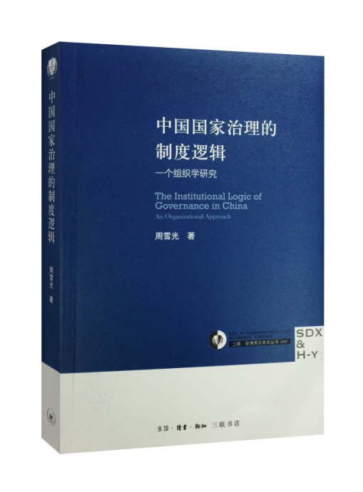
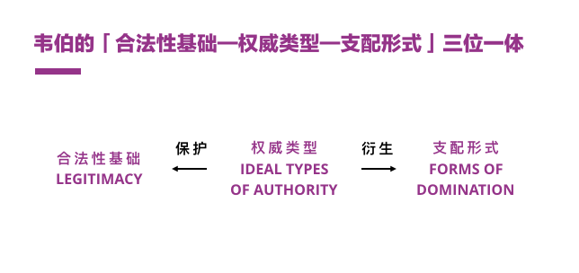
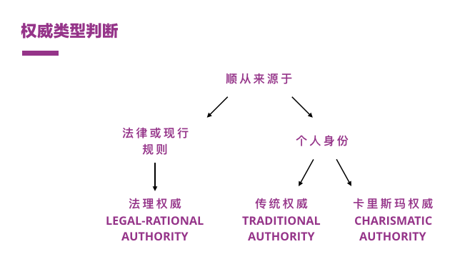
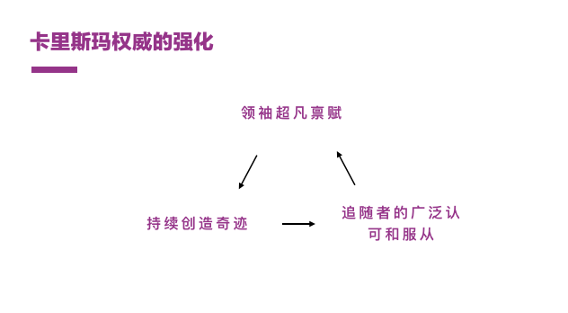
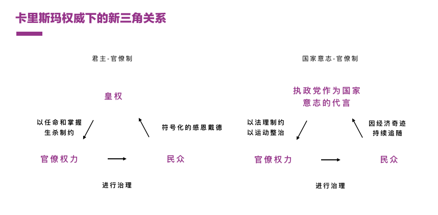

开始研读政治、组织、以及社会学方面的书籍，以此重新思考企业组织的治理逻辑，本系列所研读的是周雪光所著《中国国家治理的制度逻辑——一个组织学研究（The Institutional Logic of Governance in China - An Organizational Approach）》，该书系统地阐述了中国国家治理的内在逻辑，从组织和社会学的角度分析了其制度合理性，即为「一统体制与有效治理」这一矛盾服务。

这也是我开始阅读这一个领域书籍的初衷，在企业治理领域同样面临着这样的矛盾，从上及下的统一战略实施，和真正行之有效的执行之间的矛盾，此二者是相通的。
第一篇覆盖该书第2章《国家治理逻辑与中国官僚体制：一个韦伯理论视角》的内容。
德国社会学家马克斯·韦伯在20世纪出提出了国家治理模式的分析框架，即「合法性基础——权威类型——支配形式」三位一体。

其核心逻辑是：
- 任何权力不可能持久建立在强制或暴力基础上，而必须有其合法性基础（Legitimacy）；
- 为了保护权力的持久性，任何权力都需要对其正当性进行最强烈的自我辩护；
- 基于合法性基础的权力称之为「权威（Authority）」；
- 权威（Authority）」的三个权威类型（Idea Type）：传统权威、卡理斯玛权威、和法理权威；
- 不同的权威类型通过不同手段保护其合法性基础，衍生出独特的制度安排，即支配形式（Forms of Domination）。
权威类型
理解权威类型便不难理解一个政治组织逻辑的合法性基础，以及其支配形式，三种权威类型的意涵为：
法理权威Legal-rational Authority：通过强调程序正义来为其提供合法性基础，于是不断强调民主过程高于一切、法理面前人人平等等基本原则，以延续其合法性。
传统权威Traditional Authority：通过对家长或首领遵从的传统习俗为其合法性提供基础，于是采用弘扬传统的礼节仪式等制度设施不断强化人们对传统权威的认同，以延续其合法性；
卡理斯玛权威Charismatic Authority：由超凡禀赋的领袖和伟大成就为其合法性提供基础，于是不断保持「追随者（如党性）」的纯粹和认可，不断强化经济成就等，以延续其合法性。

合法性基础
中国的官僚制度，不能独立存在，而是与皇权家产制，共同形成一种称作「君主官僚制」的支配形式：皇权或君权为最高权力，辅以官僚体制提供组织基础和治理工具。
皇权的合法性既来自于长子继承、祖宗之法的传统权威；又来源于君权天授、德治天下的卡理斯玛权威。而官僚制度的合法性则来源于自上而下的授权。皇权与官僚权力之间有着微妙的关系：
- 皇权天生凌驾于官僚权力之上，一方面希望制度化的官僚运作机器能够帮助其治理国家、又不希望其形成制度化法理权威，终有一天削弱其专断权力；
- 官僚机器借助传统权威中的祖宗法制，借助道德规范约束皇权；另一方面形成大量非正式的关系网络，建立庇护关系、山头宗派以保护非正式制度对皇权的潜在威胁。
换言之，两权力形成了各自的支配形式，以保护各自的合法性基础，既有「普天之下，莫非王土；率土之滨，莫非王臣」，又有「皇权不下县」的基层治理。
两者在漫长的历史演变中相互钳制、又互为增补——庸君朝，官僚体制维持；暴君生，官僚体系或推波或缓冲；明君大治，官僚体制被为己所用。这一特点，是理解中国官僚体制不可避免的前提。
而晚清「数千年未有之变局」直到1949年以后的中国，这部运转千年的官僚机器，迎来了前所未有的变化：帝制终结皇权消失后使得传统权威不可能成为国家权力的合法性声称。
随着20世纪现代国家民主宪政的法理权威成为几乎所有现代国家的合法性基础，然而经历数千年君主官僚制和儒教文化的中国社会，还无法完全接受法理权威的合法性主张：
- 现存官僚体制中现存的非正式制度与法理权威难以兼容；
- 千年所留下因皇权所留下的传统权威（中华美德与传统）或卡理斯玛式权威类型（道德楷模）虽受到质疑却依然存在；
于是执政党在建立国家的过程中，并没有将其合法性基础建立在法理权威上，而是选择了中国历史上皇权的另一个合法性基础——卡理斯玛权威。
这既符合了现有官僚体制的现实利益，又适应民众对卡理斯玛权威的需要。既然选择了卡理斯玛权威作为国家治理逻辑的基础，就必须：1）制定相应的支配形式强化卡理斯玛权威，最终保护权力合法性；2）不得不重新回到皇权与官僚权力互相依存和对抗的现实路径上。
卡理斯玛权威
卡理斯玛权威的核心在于：领袖超凡禀赋、创造奇迹、获得「追随者」的认可和服从，最终达到强化合法性基础的目的。
在经典开放世界游戏《辐射》系列中，卡理斯玛是一项重要的个人魅力属性，在日常生活中它是领导力的具体体现。
中国共产党执政早期（1949——1976年）的核心逻辑都基本符合卡理斯玛权威的支配形式，例如：
- 以毛泽东为中心的稳定领导；
- 迅速地平定天下，以及国家运动在经济上的成就，迅速摆脱中国积弱的国家面貌；
- 通过「群众运动」动员社会资源并持续强化群众和领袖的关系。

这些举措在国家治理上有着完整的合理性，同时也即将面对现有官僚系统的现实挑战：
首先，官僚体系依旧保持着千百年来的「向上负责制」，卡理斯玛权威不得不下放权力，以获得有效治理，官僚体系必然有天生的分权趋势；
其次，卡理斯玛权威天生充满领袖的创造力和革命精神，而官僚体制又是僵化和墨守陈规的，束缚卡理斯玛权威的手脚；
再次，官僚体制既建立了领袖和民众稳定的组织联系，又导致了追随者和领袖的分离，潜在对其权威的合法性形成削弱。
在这个背景下，不难理解建国以来毛泽东对官僚体制的持续和间歇性的改造（党内整风和政治运动），以及采用群众运动的方式来钳制官僚体制，最后以「文化大革命」的形式走向极端，这些都是卡理斯玛权威与官僚权力之间的紧张，最终这种紧张在毛泽东时代的后期形成危机——民众、官僚权力、以及卡理斯玛权威之间渐行渐远，合法性危机浮出水面。
随着中国社会本身的发展，传统卡理斯玛权威的领袖依赖开始越来越被削弱，执政党开始利用法理权威来管束官僚机器，同时并没有放弃对卡理斯玛权威中奇迹的依赖，因此，新时期中国共产党的治理逻辑可以简化为：
- 一方面强化卡理斯玛权威的支配形式，例如将党和国家作为一个整体，由执政党作为国家意志的代表，与地方政府区分；持续强调意识形态管控和政治教化；并努力发展经济奇迹来重建其合法性基础；
- 另一方面既依靠官僚机构作为执政的润滑剂和执行者，又通过建立完善的法理权威对官僚体制权力扩张进行间歇和持续性的整治。
传统皇权、官僚权力、民众的三角依然保留官僚权力和民众二角，传统皇权被卡理斯玛权威代表的国家意志所替代，钳制手段则发生了重大变化：

写在最后
历史的路径依赖是及其强大的，无论是皇权的传统权威还是1949年后的卡理斯玛权威，都无法避免和现行官僚权力相互钳制和依赖的关系。这些固有矛盾在新的历史背景下，例如1949到1976年阶段的皇权丧失、1976年以后卡理斯玛权威式微，形成新的合法性基础、权威类型、和支配形式。
但是「一统体制和有效治理」的基本逻辑依然是上千年来中国国家治理的基本矛盾——无论一统体制依托的是传统权威和卡理斯玛权威结合的皇权，还是卡理斯玛权威和法理权威结合的代言国家意志的执政党——其所面对的，依然是那个基本延续历史特点（向上负责和非正式制度泛滥）的官僚体系。
唯一的变化，只是前者钳制的手段是至高无上的皇权、后者约束的工具是基于法理权威的制度（进一步加强法制建设）和运动治理（如推广三讲到极端的整风运动）。